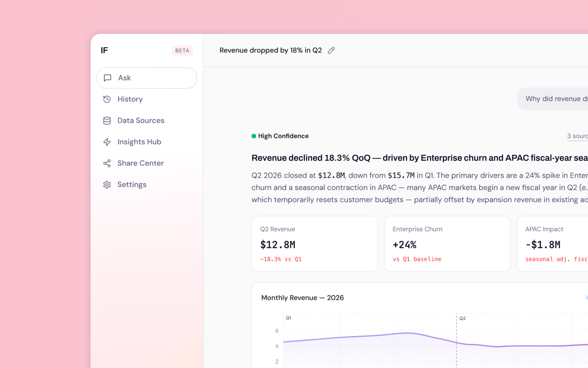
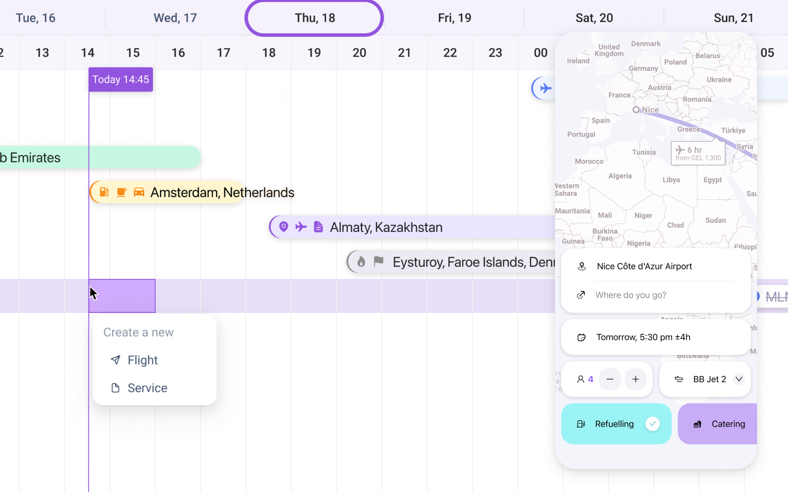
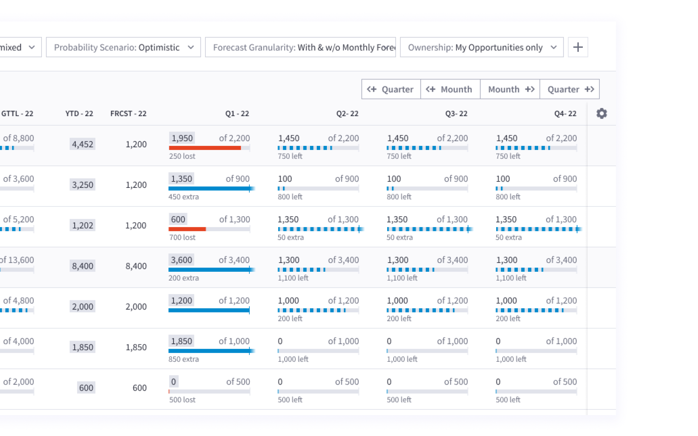
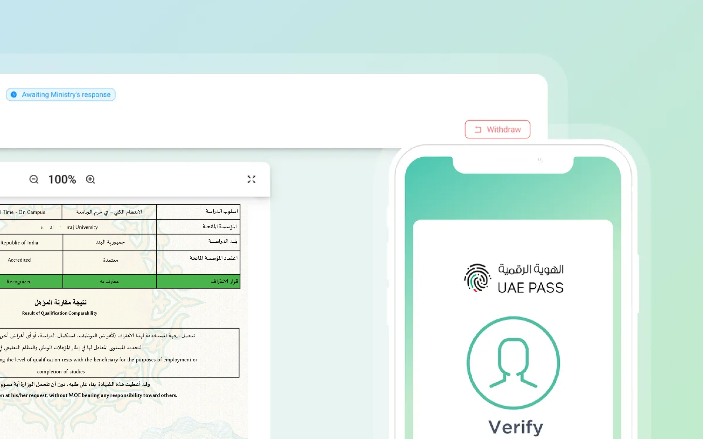
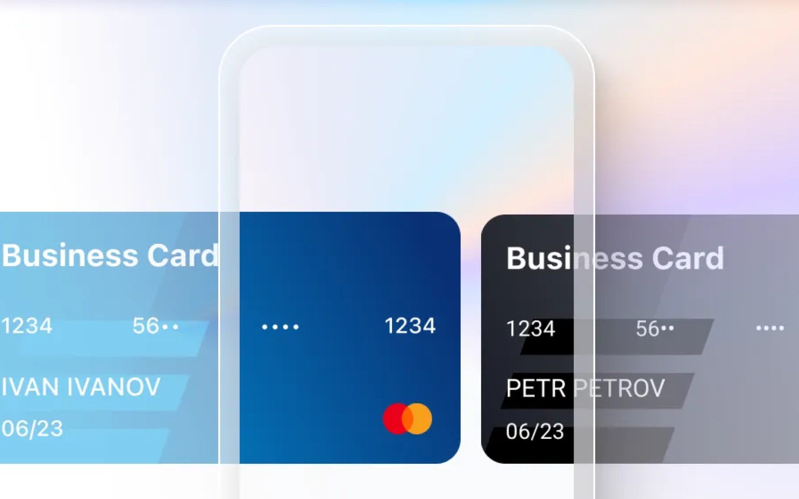
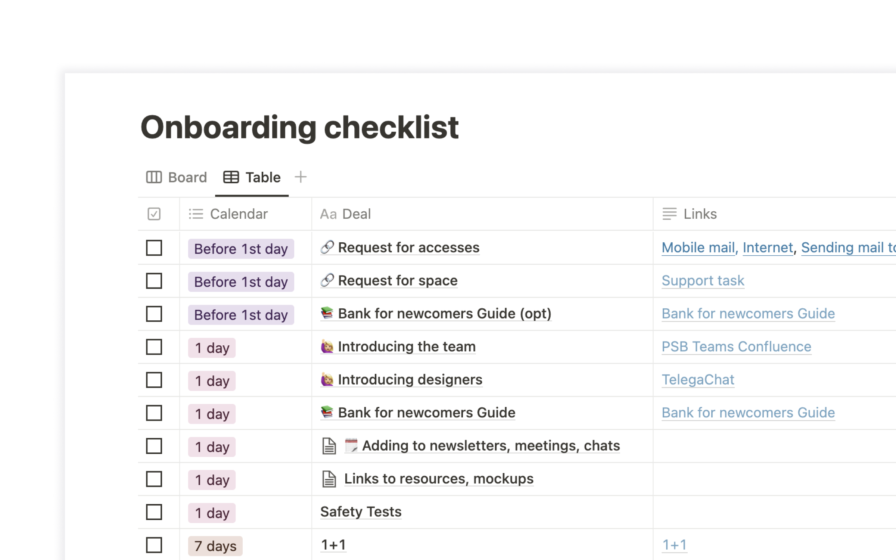
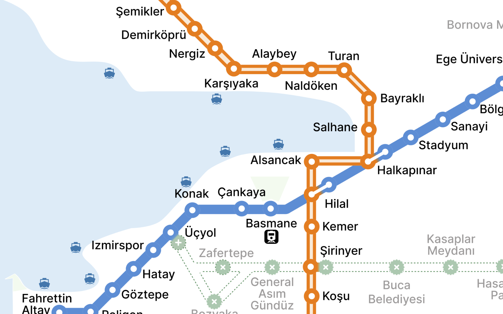

Designing clarity into data-heavy products
11 years of expertise across fintech, banking, aviation, SaaS and e-commerce — taking complex, high-stakes interfaces from discovery to shipped product, and making the evidence behind every decision visible

Insight Flow: Conversational BI Platform
An AI interface that lets business users explore data through dialogue — with evidence, confidence, and a recommended action attached to every answer
→
Aviation: ERP system and B2C app
An ERP system for private aviation services spanning B2E, B2B and B2C — from dispatcher dashboards to a mobile app for booking and managing flights
→
CRM: Revenue Forecasting
Revenue reporting and forecasting tool for a full company pipeline — designed solo, from discovery through role-based views for six user groups
→
E-Doc: Document Signing Platform
A patent and trademark signing platform for the UAE market, integrated with the UAE Pass national digital identity — shipped as MVP in six months
→
Bank Products for Business
As Stream Design Lead, launched business cards, loyalty, cash services, payments and special accounts across iOS, Android and web
→
Design Leadership
Mentoring, technical interviews, and building the design system and DesignOps practice that let a growing bank design team scale
→
Drawing Izmir Transport Map
A community design workshop: studying a city's transport map problems and running a hands-on session that produced three redesigns in one evening
→Product Designer
Porto, Portugal · Open to relocation to the UK
Product Designer
EPAM Systems · Remote · September 2021 — Present
The international company providing software and digital platform development services
Design Lead
VTB Bank · Eastern Europe · June 2020 — August 2021
One of the 3 top banks in the country. Banking apps for medium and small businesses
Design Lead
Promsvyaz Bank · Eastern Europe · June 2018 — May 2020
TOP 10 banks. Internet and mobile banking for salary clients and for loan holders
UI/UX Designer
InDev studio, Lyykteam, RedFox · Eastern Europe · August 2015 — June 2018
Designed fashion and sportswear online stores, crypto exchangers, delivery applications, and social networks. Implemented metrics. Built a product vision and planning
Building a full-cycle design process
Research and metrics
Open to senior / lead product design roles and select freelance projects